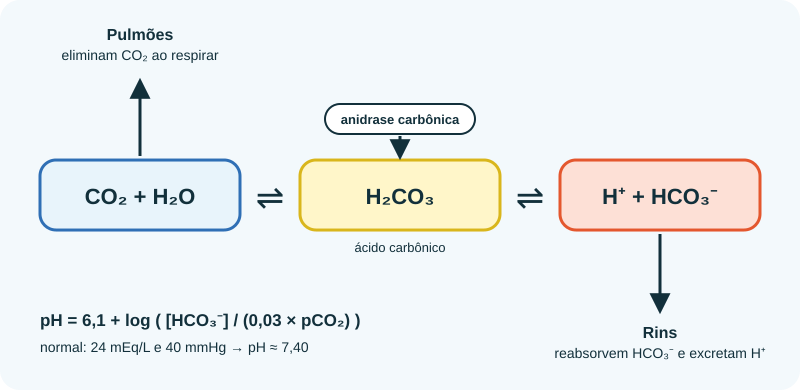

Início › Sangue
Como o corpo mantém o pH do sangue
O pH do sangue é uma das variáveis mais bem controladas do organismo. Entender como isso funciona mostra por que um copo de água com limão (ou de “água alcalina”) não muda nada ali.
Uma faixa estreita
O pH do sangue arterial saudável fica entre 7,35 e 7,45. Abaixo de 7,35 fala-se em acidose; acima de 7,45, em alcalose. Fora de aproximadamente 6,8 a 7,8, as enzimas e proteínas deixam de funcionar e a vida não se sustenta.
Por isso o corpo tem várias camadas de defesa, que atuam em velocidades diferentes.
Três linhas de defesa
- Tampões químicos (imediatos). Soluções que resistem a mudanças de pH. O principal do sangue é o par CO2/bicarbonato. Proteínas (incluindo a hemoglobina) e fosfato também ajudam.
- Pulmões (minutos). Respirar mais ou menos elimina mais ou menos CO2, que em água forma ácido carbônico.
- Rins (horas a dias). Eliminam H+ na urina e reabsorvem ou geram bicarbonato.

A equação de Henderson–Hasselbalch
O pH do sangue depende da razão entre bicarbonato e CO2 dissolvido:
Com valores normais, [HCO3−] = 24 mEq/L e pCO2 = 40 mmHg:
- 0,03 × 40 = 1,2
- 24 / 1,2 = 20
- log 20 ≈ 1,30, então pH = 6,1 + 1,30 ≈ 7,40
Se os pulmões baixam o CO2, o pH sobe; se os rins perdem bicarbonato, o pH cai. Teste no simulador do Laboratório.
Acidose e alcalose são quadros médicos
| Quadro | O que muda | Exemplos de causa |
|---|---|---|
| Acidose metabólica | HCO3− baixo | Cetoacidose diabética, insuficiência renal, diarreia grave, certas intoxicações |
| Acidose respiratória | CO2 alto | Respiração insuficiente (doença pulmonar grave, depressão respiratória) |
| Alcalose metabólica | HCO3− alto | Vômitos intensos, uso excessivo de diuréticos |
| Alcalose respiratória | CO2 baixo | Hiperventilação (ansiedade, altitude, dor) |
Esses quadros são emergências ou sinais de doença, e nenhum deles surge por comer limão, tomate ou café.
E o pH da urina?
O pH da urina varia entre 4,5 e 8, conforme a alimentação e o que os rins precisam eliminar. Dietas ricas em carne tendem a deixar a urina mais ácida; dietas ricas em frutas e vegetais, menos ácida.
Quem mede a urina com fita e vê “mais alcalina” depois do limão pode concluir que o sangue ficou alcalino. É o contrário: a urina variou para que o sangue não variasse.
A escala do problema
O metabolismo normal produz cerca de 15.000 milimols de CO2 por dia (mais de meio quilo), eliminados pelos pulmões, além de algumas dezenas de milimols de ácidos fixos que os rins excretam. Um copo com limão traz cerca de 3 milimols de ácido cítrico — que, ainda por cima, é metabolizado.
Comparar “3” com “15.000” explica por que o limão é irrelevante para o pH do sangue.
Hiperventilar elimina CO2 demais e eleva o pH do sangue (alcalose respiratória). Isso pode causar formigamento e tontura — sem ter comido nada.